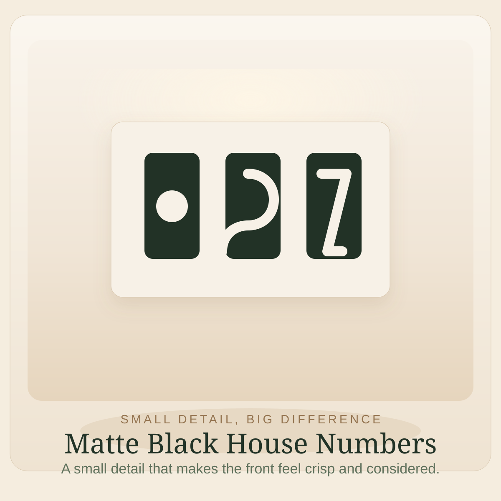

Image slot
Matte black house numbers
Small Detail, Big Difference
Easy Favorite
Matte black house numbers
Cute finds
Fresh house numbers are one of the quickest little fixes for making the front of a house feel sharper and more considered.
They add clarity fast and make the whole entry feel more intentional without adding clutter.
A simple type style almost always feels more timeless than anything overly styled.
NumbersFront doorFast fix
Browse on Amazon